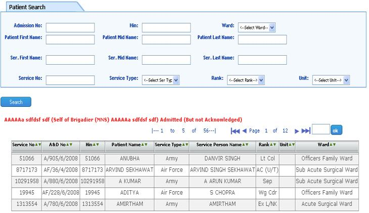

Patient Enquiry
Screen Overview
This screen is basically to search for a patient with the minimum details possible.
The best search criterion to find out a patient from the database is the HIN of the patient. But the same may not be available with the patient. Then the other available information can be used to find out the patient.
The search can be multiple criteria and based on Name, Service no., Address, Ward, HIN no. , A&D no. and Phone No.
Once the entry is done the system will search for the required record. If the exact match is not found, then the system will display several records matching the given information. The user will have then to find out the right one by adding more suitable search criteria or by going into the details of the selected records.
After selecting the right patient, the user can view information related to registration, visits, IP Admission, and Surgeries etc.
